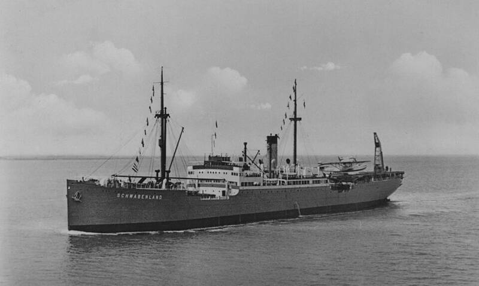

New Swabia
Queen Maud Land, Antarctica

An area explored in 1938 and 1939 by a German expedition aboard the ship Schwabenland, looking for a site for a whaling station. Germany never made a formal claim and built no base there. Since the 1970s, conspiracy theories have placed a secret Nazi base here, with surviving leaders and flying saucers that the United States supposedly fought for decades. 1,2
Open in the interactive Watcher
Related
- Operation Highjump was driven off by flying saucers from a Nazi base Claim
- Nazi Germany built working flying saucers Claim
- Richard E. Byrd Person
Sources
- New Swabia Wikipedia
- Nazi UFOs Wikipedia